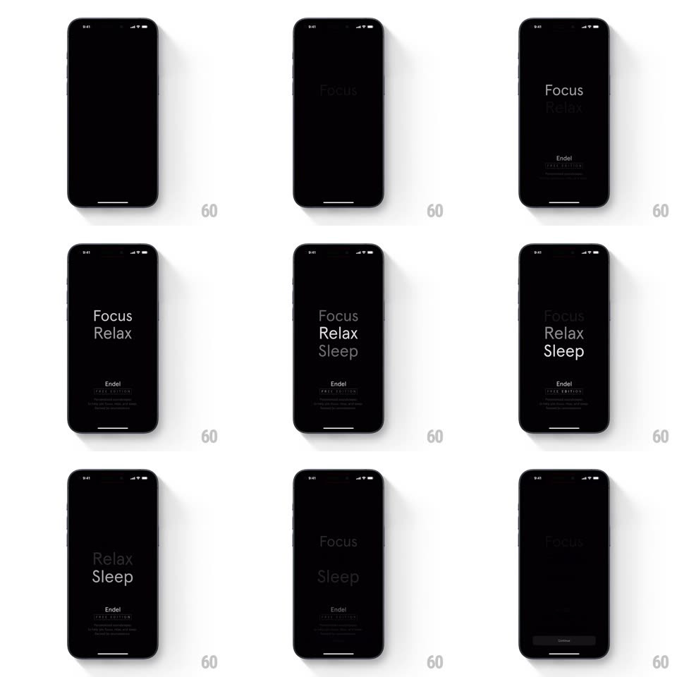

Media
Frame-by-frame

Rebuild this interaction 1:1: Endel's launch splash - on pure black, "Focus" fades in, then "Relax" stacks beneath it, then "Sleep", a slow breathing stack of modes that fades through and hands off to onboarding.

Rebuild this interaction 1:1: Endel's launch splash - on pure black, "Focus" fades in, then "Relax" stacks beneath it, then "Sleep", a slow breathing stack of modes that fades through and hands off to onboarding. ## Integration Integration: stack-agnostic spec - springs given as stiffness/damping, timed motions as duration + curve; map every value to your framework and animation library of choice. ## Scene Black screen. Center-left stack of three gray-white words: "Focus", "Relax", "Sleep"; near the bottom a small "Endel" wordmark with "FREE EDITION" and two faint lines of fine print. ## Motion spec Pattern: staggered breathing word stack. - "Focus" fades in alone (600ms, ease-out), holds 500ms. - "Relax" fades in beneath it (600ms) as Focus lifts a touch in brightness; "Sleep" follows 700ms later, the stack settling into its final spacing. - The three words then breathe together (opacity 0.75 <-> 1, 2.4s sine, phase-aligned) while "Endel" and the fine print fade in low (800ms). - Exit: the stack dims top-down (Focus first, 200ms apart) and crossfades into the first onboarding screen (400ms). ## Calibration - Serif or soft grotesque type, light weight, ~34px - quiet, not shouty. - Total splash under 3s; the app never holds the user hostage. ## Reduced motion All three words fade in together; no breathing. ## Don't miss - The stagger order IS the brand story: focus, relax, sleep - top to bottom, day to night. - The wordmark stays small and low; the modes are the hero.